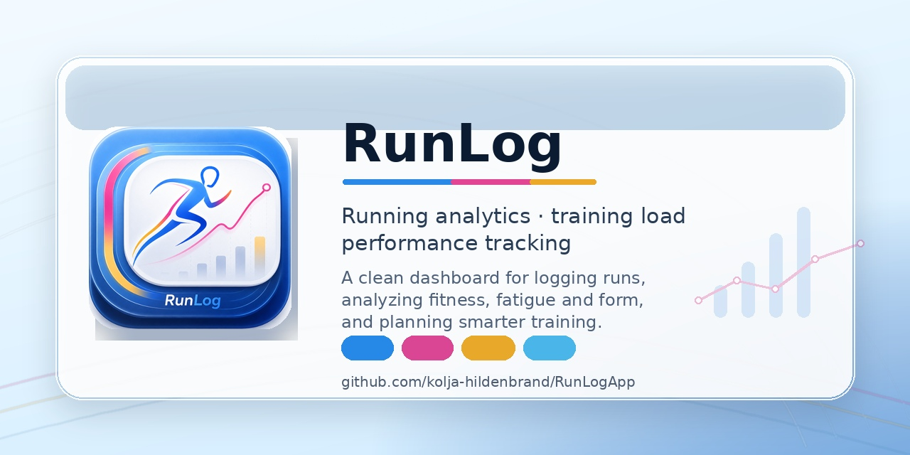

Lokale Trainingsplanung & Analytics für Langstreckenläufer — offline, keine Cloud, keine Kompromisse.
node:sqlite, kein nativer Build nötig. Getestet mit Node 25.bashnpm install # einmalig
npm run dev # → http://localhost:5173
bashnpm run build && npm start # → http://localhost:3000
Daten liegen in data/training.db (SQLite) — einfach sichern, liegt mit im iCloud-Ordner. Im Footer führt „Anleitung" zur Schritt-für-Schritt-Übersicht.
PMC (2fr) + Aktuelle Woche (1fr) nebeneinander. Darunter Saison-Progression + Intensity-Trend. Stat-Grid mit CTL/ATL/TSB/Ramp + VO2max-Kachel (VDOT, Niveau-Badge, Sparkline).
Einheiten je Tag mit km-je-Zone, Intervall-Builder, Drag & Drop. Live-Panel: geplante km, Zonenverteilung, TSS, projizierte Form, Ampel-Badge.
Wochentag-Switcher (TSS-skalierte Punkte). Pro Tag: Wellness (Schlaf, HRV, Recovery, Strain, RPE…) und Aktivitäts-Kacheln mit % Plan-Erfüllung.
Geplant-vs-real-Tabelle mit Farb-Kacheln (≥90 % grün / ≥70 % gelb / rot), PMC, Efficiency Factor je Tag, Wellness-Schnitt, Reflexion → Drucken/PDF.
PMC + Saison-km, Intensity-Trend, Wellness-Verläufe (Schlaffenster-Chart, HRV, Recovery…), Zonen-Effizienz, Plan-Erfüllung, Intervall-Trend → druckbar.
Wettkämpfe mit Endzeit, Distanz, Splits, Platzierung, HF, Höhenmeter, Notizen. Erscheinen als goldene Marker in allen Charts.
PBs je Standarddistanz aus Strava + Critical-Speed-Modell (CS-Pace, D′, R²) + Race-Prediction-Chart (5k/10k/HM/M über Saisonverlauf).
N-of-1-Methoden-Engine: Marker-Batterie (CS primär, VDOT, Threshold, Entkopplung, EF…), geführte Vorher/Nachher-Experimente + passive Inferenz (welches Regime — polarisiert/pyramidal/threshold/Norwegian — bei dir mit Fortschritt korreliert; mit Confounder-Kontrolle).
Wochen anlegen/bearbeiten, automatisch nach Datum sortiert und ab 0 nummeriert. Ziel-km direkt editierbar.
Athletenprofil (Geburtsjahr, Geschlecht, Max-HF), HF-Zonen Lauf + Fahrrad separat, Pace- und Power-Zonen. Profile umbenennen/löschen.
Zonen-Sets mit Gültig-ab-Datum, Analyse-Schwellen, Strava-Verbindung.
Phasen, Sportarten, Einheitstypen, Tagesfaktoren — ohne Code-Änderung hinzufügen/umbenennen/umfärben.
Der Profil-Wechsler oben in der Sidebar erlaubt mehrere unabhängige Nutzer (z. B. Kolja + Isabel). Jedes Profil hat eigene Saison, Einheiten, Tracking-Daten und Zonen-Sets — ohne Passwort, alles lokal.
Einmalig auf strava.com/settings/api eine kostenlose API-App anlegen — Callback-Domain: localhost.
Client-ID + Client-Secret in Einstellungen → Strava-Verbindung eintragen → „Mit Strava verbinden".
„Sync ab Datum" oder „Ganzes Jahr importieren" → PMC fürs ganze Jahr. Import holt km/Zeit/Ø-HF/Watt + Streams (NGP/NP, Zeit-in-Zone, Bestzeiten).
Fertige Installer in den GitHub Releases — ohne Terminal, mit Desktop-Icon:
Datei: RunLog-1.0.0-arm64.dmg
Herunterladen → öffnen → RunLog in Programme-Ordner ziehen.
xattr -dr com.apple.quarantine /Applications/RunLog.appDatenpfad: ~/Library/Application Support/RunLog
Datei: RunLog-Setup-1.0.0.exe
Installer ausführen → Pfad wählen → Startmenü-Eintrag wird angelegt.
Datenpfad: %APPDATA%\RunLog
.deb (Ubuntu/Debian):
sudo apt install ./RunLog-1.0.0-amd64.deb
.AppImage (portabel):
chmod +x RunLog-*.AppImage && ./RunLog-*.AppImage
sudo apt install libfuse2 nötig.Datenpfad: ~/.config/RunLog
bash# macOS
npm install && npm run electron:build
# Windows
npm install && npm run electron:build:win
# Linux
npm install && npm run electron:build:linux
Windows- und Linux-Builds werden automatisch per GitHub Actions erzeugt, wenn ein Tag v* gepusht wird.
bashnpm run build && npm start # → http://localhost:3000
Alle Features vollständig im Browser verfügbar.
Trainingsdaten liegen ausschließlich in data/training.db — gitignored, nie im Repo.
data/-Ordner in die neue Version kopieren — fertig. Eine alte training.db im Wurzelordner wird einmalig automatisch übernommen.npm run db:template → schreibt training.empty.db (nur Schema, keine Daten).npm run db:reset — sichert aktuelle DB automatisch und legt eine frische an.server/client/ALTER TABLE ADD COLUMN + v2-Tabellen mit Kopie. Bestandsdaten werden nie angetastet.